Proyecto nuevo para el STM32F103C8T6 con el reloj interno de 8 MHz (suficiente para simular). USART1 asíncrona a 9600.
Pines del LCD como salida con las etiquetas LCD_RS, LCD_E, LCD_D4 a LCD_D7 (clase del LCD).
DMA (acceso directo a memoria) permite que el hardware copie datos de un periférico a la RAM, de periférico a periférico o de memoria a memoria sin que el programa intervenga. Se arma un proyecto desde cero para el STM32F103C8 con LCD, UART y tres canales ADC (dos potenciómetros y un LM35). Primero se leen con ADC_Read como en la clase 37 y después se activa el DMA circular en media palabra (16 bits) y se lee todo con HAL_ADC_Start_DMA en un buffer. Se simula en Proteus; con la Black Pill (Cortex-M4) Proteus no lo simula y se verá en la clase siguiente.
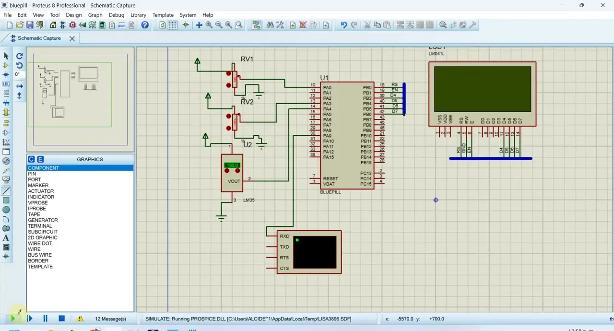
Proyecto nuevo para el STM32F103C8T6 con el reloj interno de 8 MHz (suficiente para simular). USART1 asíncrona a 9600.
Pines del LCD como salida con las etiquetas LCD_RS, LCD_E, LCD_D4 a LCD_D7 (clase del LCD).
Activa tres entradas del ADC1 (en el video IN0, IN3 e IN4). Pon Number of Conversion en 3 para que se habilite Scan Conversion Mode. Activa el modo discontinuo con 1 conversión, como en la clase 37.
En cada Rank asigna un canal: Rank 1, 2 y 3.
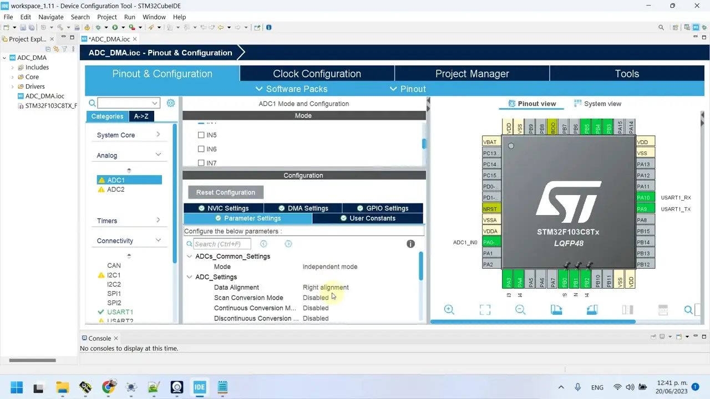
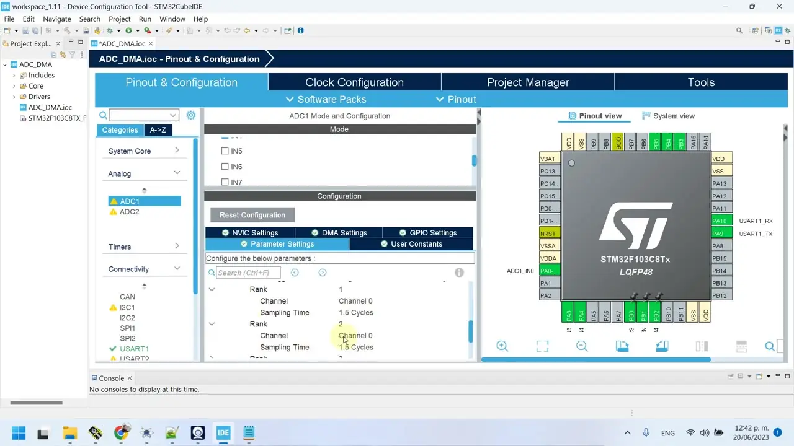
Copia las librerías adc, delays, uart y lcd en Librerias y agrégala al path. En User Constants del ADC agrega el handle label adc1 (la librería lo usa). Activa printf con float y la generación del .hex.
#include "adc.h"
#include "delays.h"
#include "uart.h"
#include "lcd.h"
#include "stdio.h"
#include "string.h"
#include "stdint.h"En el video aparecieron errores porque las etiquetas del LCD estaban mal escritas (LDC en vez de LCD) y un pin estaba repetido. Revisa que coincidan exactamente con la librería.
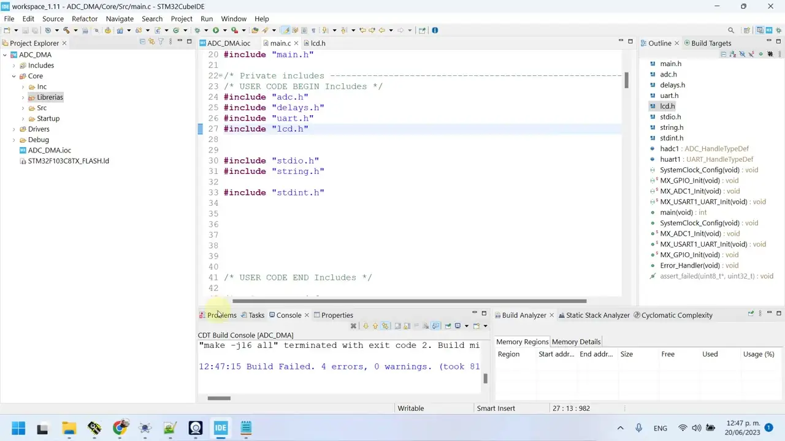
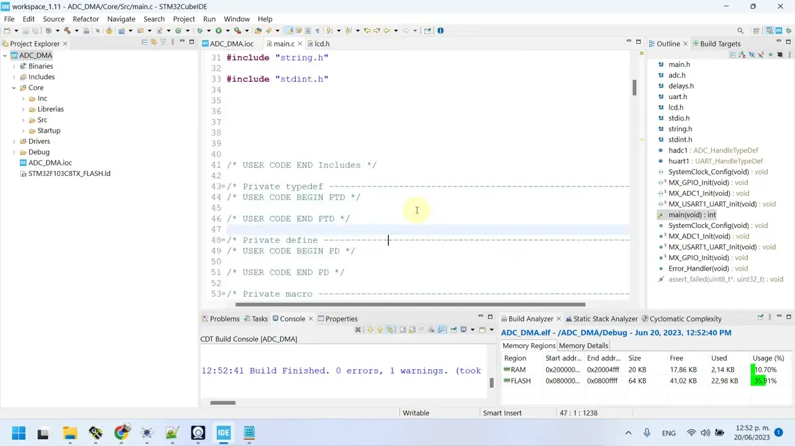
delay_us_dwt_init();
Lcd_Init();
Lcd_Cmd(_LCD_CLEAR);
Lcd_Cmd(_LCD_CURSOR_OFF);
Lcd_Text(1, 4, "ADC_DMA");
uartx_write_text(&huart1, "INICIANDO\r\n");Antes de programar la lógica, prueba cada periférico por separado (LCD, UART).
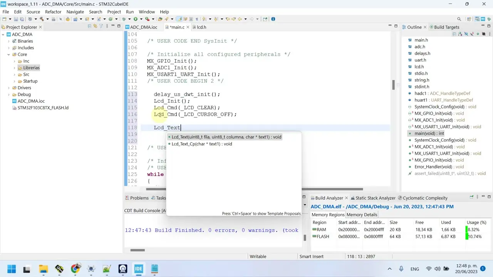
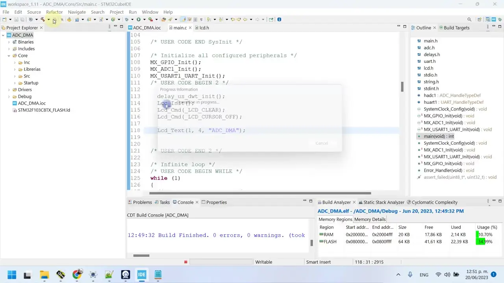
Cada llamada a ADC_Read() convierte el siguiente canal de la secuencia. El ADC es de 12 bits: se divide entre 4095.0 y se multiplica por 3.3 V. El LM35 da 10 mV/°C, por eso la temperatura se multiplica además por 100.
uint16_t codigo;
float voltaje1, voltaje2, temperatura;
char texto[50];
while (1)
{
codigo = ADC_Read();
voltaje1 = codigo * 3.3 / 4095.0;
codigo = ADC_Read();
voltaje2 = codigo * 3.3 / 4095.0;
codigo = ADC_Read();
temperatura = codigo * 3.3 * 100.0 / 4095.0;
sprintf(texto, "V1=%.1f", voltaje1); Lcd_Text(2, 1, texto);
sprintf(texto, "V2=%.1f", voltaje2); Lcd_Text(3, 1, texto);
sprintf(texto, "Temp=%.2f", temperatura); Lcd_Text(4, 1, texto);
sprintf(texto, "V1=%.1f V2=%.1f T=%.2f\r\n\r\n", voltaje1, voltaje2, temperatura);
uartx_write_text(&huart1, texto);
HAL_Delay(500);
}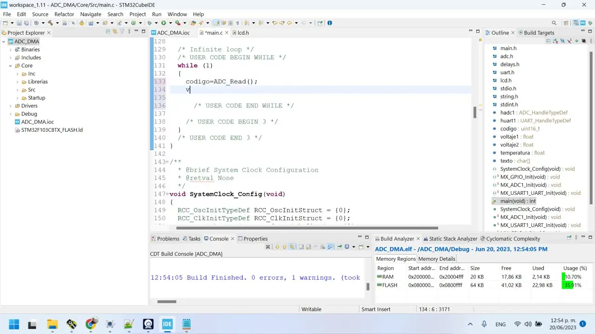
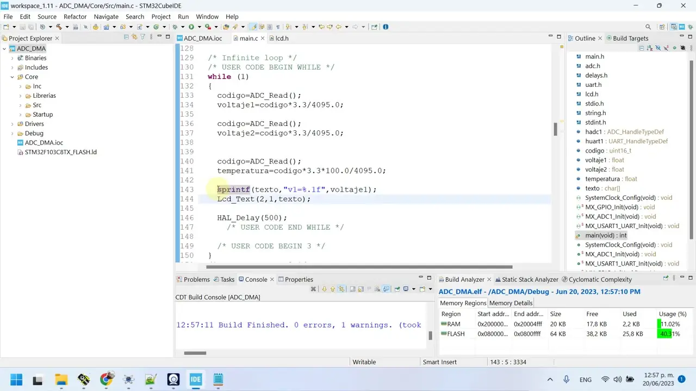
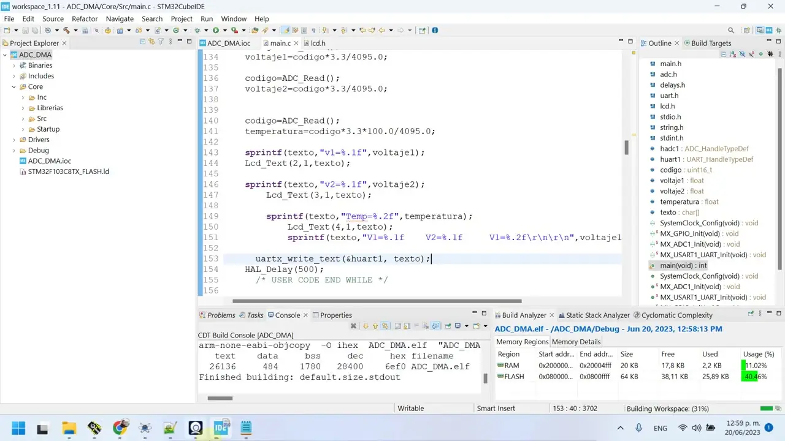
En ADC1 → DMA Settings → Add: elige ADC1, dirección Peripheral To Memory, modo Circular y ancho de dato Half Word (16 bits) en periférico y memoria.
Circular: cuando el buffer se llena vuelve a empezar y sigue llenándolo. Normal: se detiene al llenarlo.
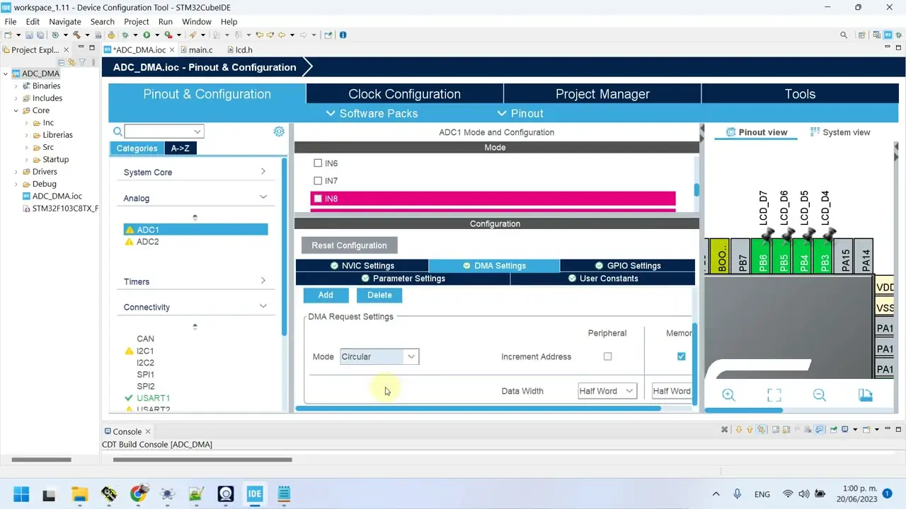
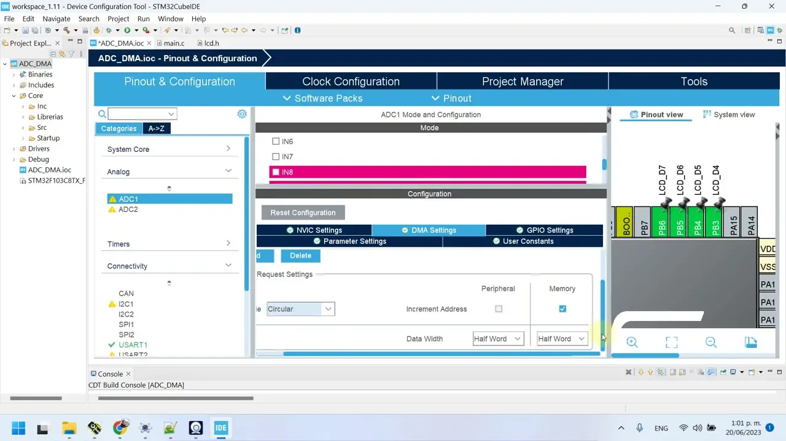
Declara un buffer de 16 bits. HAL_ADC_Start_DMA convierte los tres canales y los deja en adc_buf[0], [1] y [2]. El resto del programa queda igual.
uint16_t adc_buf[3];
// con DMA
HAL_ADC_Start_DMA(&hadc1, (uint32_t *)adc_buf, 3); // inicia la conversión
HAL_Delay(10);
voltaje1 = adc_buf[0] * 3.3 / 4095.0;
voltaje2 = adc_buf[1] * 3.3 / 4095.0;
temperatura = adc_buf[2] * 3.3 * 100.0 / 4095.0;La función pide un puntero uint32_t*, por eso el cast. El retardo de 10 ms reemplaza por ahora la interrupción de fin de DMA, que se verá más adelante. La gran ventaja del DMA aparece al llenar buffers de cientos de muestras de un canal, por ejemplo para graficar una señal.
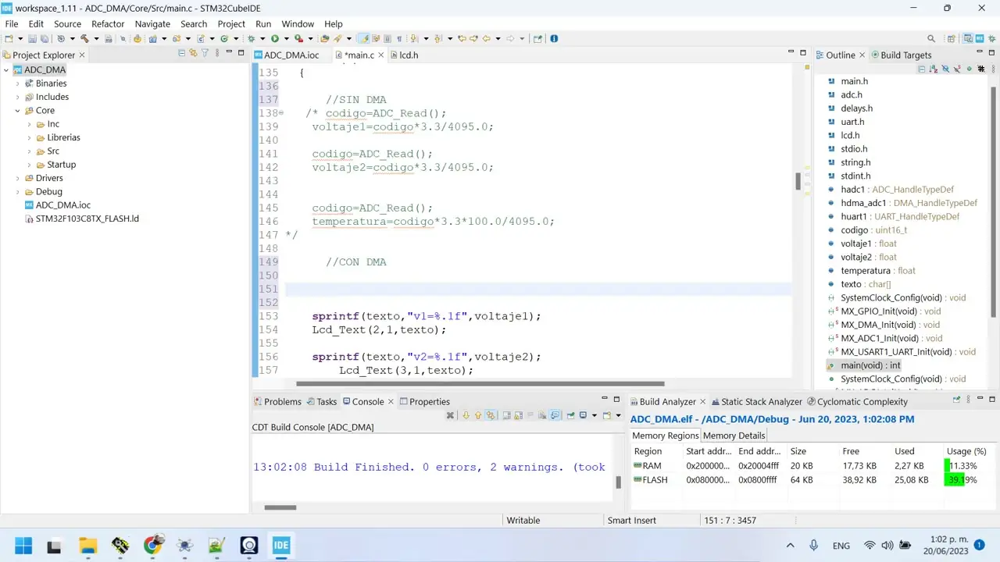
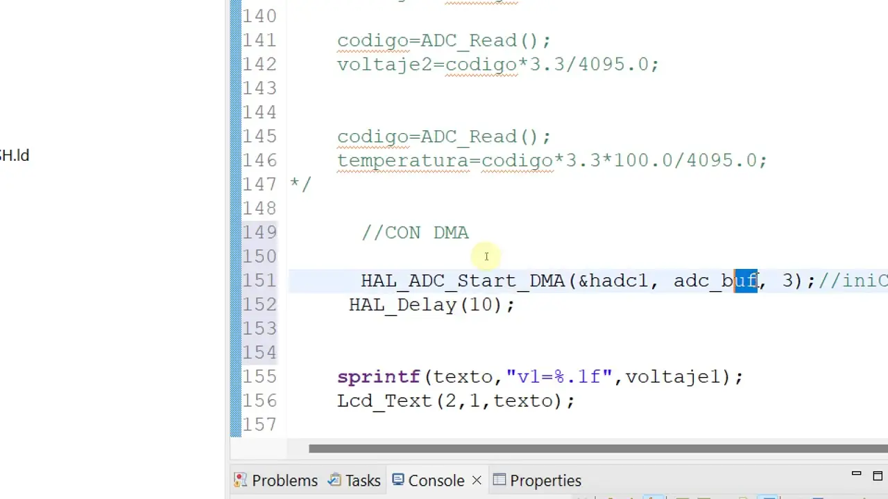
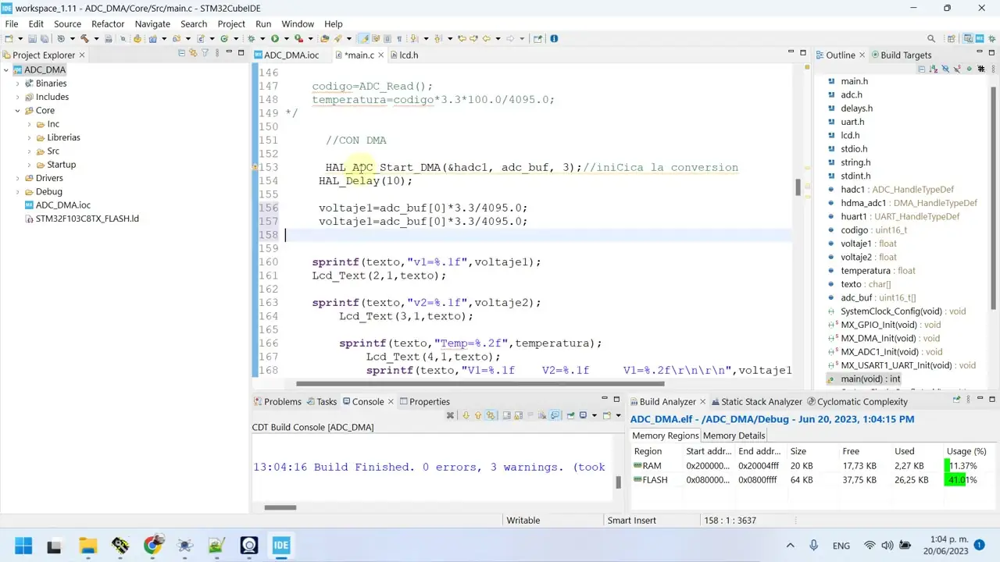
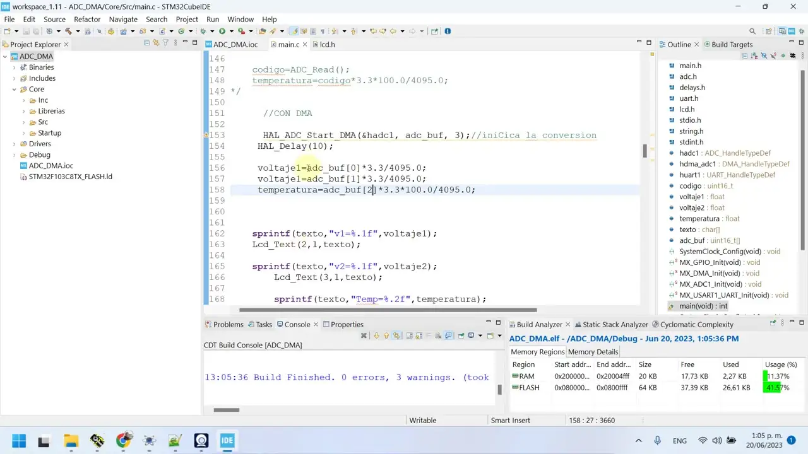